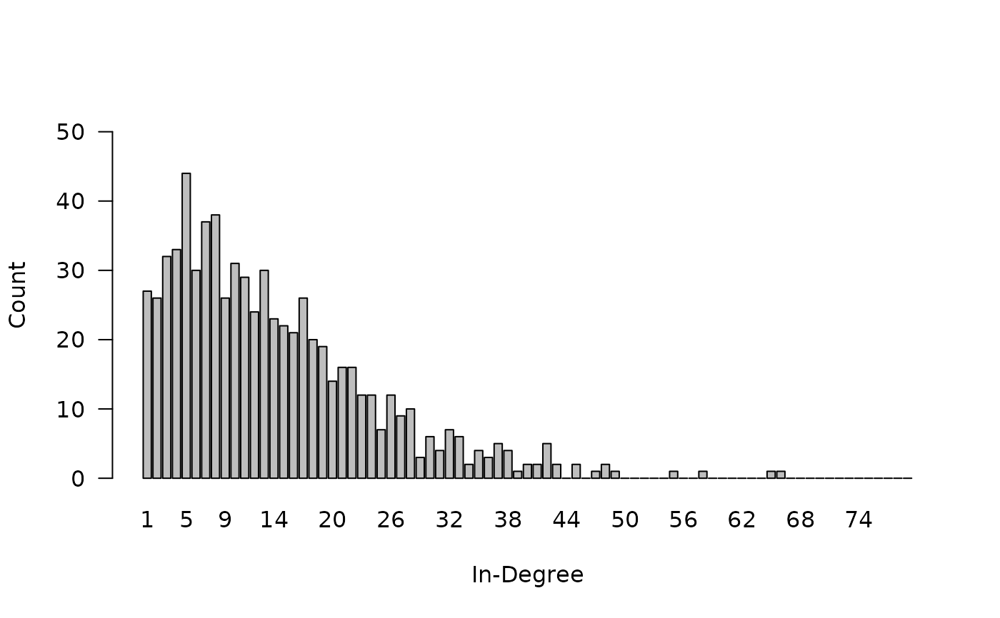
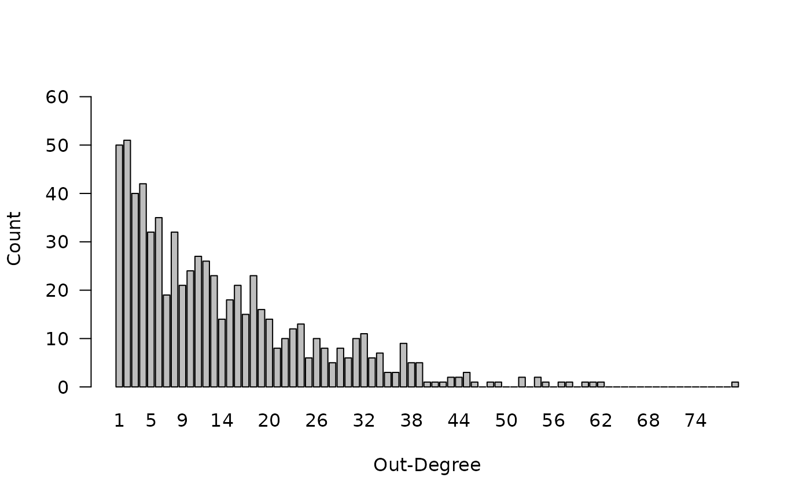

Constructor for the iglm.data R6 object
iglm.data.RdCreates a `iglm.data` object, which stores network and attribute data. This function acts as a user-friendly interface to the `iglm.data` R6 class generator. It handles data input, infers parameters like the number of actors (`n_actor`) and network directedness (`directed`) if not explicitly provided, processes network data into a consistent edgelist format, calculates the overlap relation based on an optional neighborhood definition, and performs extensive validation of all inputs.
Usage
iglm.data(
x_attribute = NULL,
y_attribute = NULL,
z_network = NULL,
neighborhood = NULL,
directed = TRUE,
n_actor = NA,
type_x = "binomial",
type_y = "binomial",
scale_x = 1,
scale_y = 1,
return_neighborhood = TRUE,
file = NULL
)Arguments
- x_attribute
A numeric vector for the first unit-level attribute.
- y_attribute
A numeric vector for the second unit-level attribute.
- z_network
A matrix representing the network. Can be a 2-column edgelist or a square adjacency matrix.
- neighborhood
An optional matrix for the neighborhood representing local dependence. Can be a 2-column edgelist or a square adjacency matrix. A tie in `neighborhood` between actor i and j indicates that j is in the neighborhood of i, implying dependence between the respective actors.
- directed
A logical value indicating if `z_network` is directed. If `NA` (default), directedness is inferred from the symmetry of `z_network`.
- n_actor
An integer for the number of actors in the system. If `NA` (default), `n_actor` is inferred from the attributes or network matrices.
- type_x
Character string for the type of `x_attribute`. Must be one of `"binomial"`, `"poisson"`, or `"normal"`. Default is `"binomial"`.
- type_y
Character string for the type of `y_attribute`. Must be one of `"binomial"`, `"poisson"`, or `"normal"`. Default is `"binomial"`.
- scale_x
A positive numeric value for scaling (e.g., variance for "normal" type). Default is 1.
- scale_y
A positive numeric value for scaling (e.g., variance for "normal" type). Default is 1.
- return_neighborhood
Logical. If `TRUE` (default) and `neighborhood` is `NULL`, a full neighborhood (all dyads) is generated implying global dependence. If `FALSE`, no neighborhood is set.
- file
(character) Optional file path to load a saved `iglm.data` object state.
Examples
data(state_twitter)
state_twitter$iglm.data$degree_distribution(prob = FALSE, plot = TRUE)

#> $in_degree
#> info_in
#> 1 2 3 4 5 6 7 8 9 10 11 12 13 14 15 16 17 18 19 20 21 22 23 24 25 26
#> 24 23 24 26 31 36 26 31 26 27 28 26 32 20 30 22 25 19 20 22 15 21 14 7 11 15
#> 27 28 29 30 31 32 33 34 35 36 37 38 39 40 41 42 43 44 45 46 47 48 49 50 51 52
#> 9 10 6 5 7 9 9 7 6 4 3 5 2 8 2 5 3 0 2 6 2 2 0 2 0 0
#> 53 54 55 56 57 58 59 60 61 62 63 64 65 66 67 68 69 70 71 72 73 74 75 76 77 78
#> 1 1 0 1 1 1 1 0 0 0 1 0 1 0 0 0 0 0 0 0 0 0 0 0 0 0
#> 79 80 81
#> 0 0 0
#>
#> $out_degree
#> info_out
#> 1 2 3 4 5 6 7 8 9 10 11 12 13 14 15 16 17 18 19 20 21 22 23 24 25 26
#> 46 49 40 33 29 30 22 25 25 19 24 26 23 17 19 18 20 19 17 12 12 13 7 11 9 9
#> 27 28 29 30 31 32 33 34 35 36 37 38 39 40 41 42 43 44 45 46 47 48 49 50 51 52
#> 7 13 7 7 6 12 2 8 7 5 12 2 5 6 3 4 2 3 3 2 1 2 1 1 5 6
#> 53 54 55 56 57 58 59 60 61 62 63 64 65 66 67 68 69 70 71 72 73 74 75 76 77 78
#> 2 1 3 0 3 0 1 1 1 2 0 0 0 0 0 0 1 0 0 0 0 0 0 0 0 1
#> 79 80 81
#> 0 0 1
#>
state_twitter$iglm.data$geodesic_distances_distribution(prob = FALSE, plot = TRUE)

#> info_factor
#> 1 2 3 4 5 6 7 Inf
#> 16598 61696 217668 191240 33540 1242 22 0
state_twitter$iglm.data$density_x()
#> [1] 0.3983402
state_twitter$iglm.data$density_y()
#> [1] 2.528354
# Generate a small iglm data object either via adjacency matrix or edgelist
tmp_adjacency <- iglm.data(z_network = matrix(c(0,1,1,0,
1,0,0,1,
1,0,0,1,
0,1,1,0), nrow=4, byrow=TRUE),
directed = FALSE,
n_actor = 4,
type_x = "binomial",
type_y = "binomial")
tmp_edgelist <- iglm.data(z_network = tmp_adjacency$z_network,
directed = FALSE,
n_actor = 4,
type_x = "binomial",
type_y = "binomial")
tmp_edgelist$density_z()
#> [1] 0.6666667
tmp_adjacency$density_z()
#> [1] 0.6666667